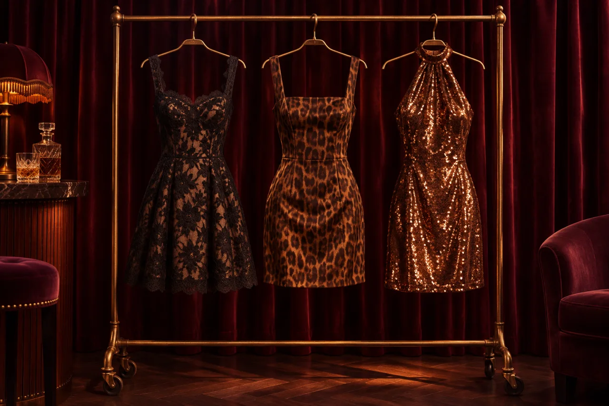
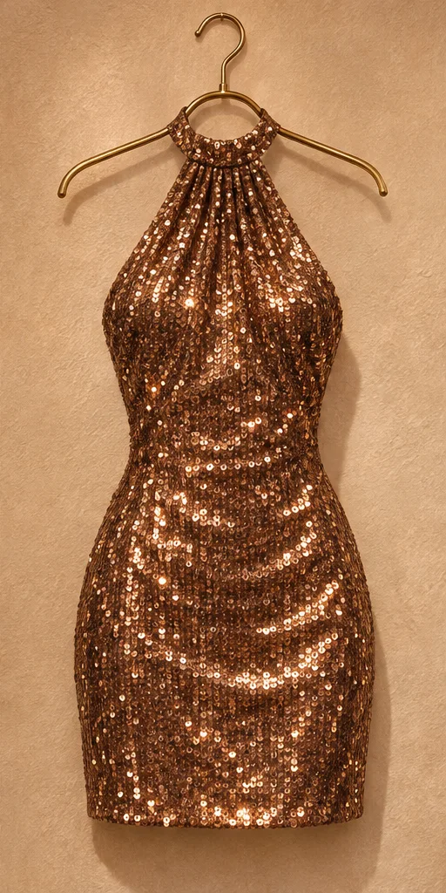

Midnight Lace
Black floral lace
Slim straps and scalloped floral lace give this fitted mini a delicate finish.
The evening collection
Party minis for late plans and last dances.
Explore the dresses
Mini dresses Sizes XS–L
Black floral lace
Slim straps and scalloped floral lace give this fitted mini a delicate finish.

Leopard print
A square neckline and warm-toned leopard print give this fitted mini its edge.

Bronze sequins
A halter neck and bronze sequins catch the light with every move.
Concept imagery shown.
Willow’s Diary is about the fun of getting dressed for a night out. Think short hems, a little peekaboo lace, and enough sparkle to make even a birthday dinner feel like an occasion.